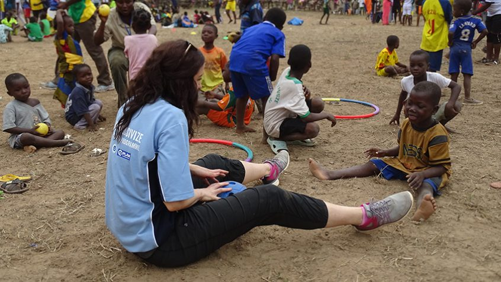
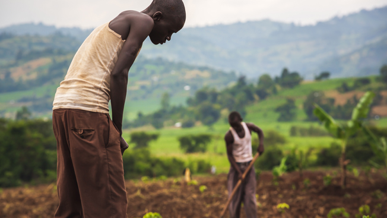
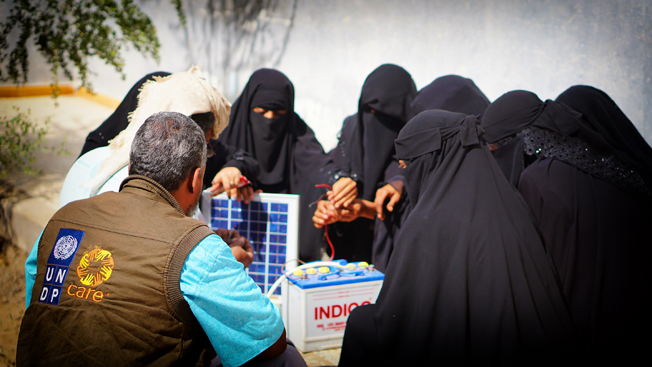

In Guinea, sport creates a level field for children with disabilities
Nearly one in every seven people in the world today – over a billion people – live with some kind of disability. Despite being
such a big part of all our societies, persons with disabilities, especially children, are often relegated to their margins, blocked
by the barriers of stigma and discrimination. A creative project by UNESCO Chair and Plan International aims to change that through
the power of sport. Girls and boys with disabilities often find themselves excluded from their societies, unable to access quality
education or healthcare. A recent UN DESA report found that 44 per cent of countries today prevent students with disabilities from
being taught in the same classroom as others. In some countries, over one in 10 persons with disabilities have been refused school
enrolment. The ambition of the Plan2Inclusivize project is to change this state of play by changing community perceptions and
attitudes toward disability through sport. Sport gives an opportunity for persons with and without disabilities to interact in a
positive context, forcing them to reshape assumptions about what persons with disabilities can and cannot do. Plan to is a training
methodology that facilitates disability inclusion and improved education though inclusive sport and play. Inclusivize is a verb
created by the UNESCO Chair to combine all actions required to actively promote inclusion. “It is about developing sport, fitness,
recreational programmes around the world to inclusivize sport,” said Ann O’Connor, international development and research expert at
UNESCO Chair. “That means, to get the people with and without disabilities playing sport, having fun and getting active.”.

Coffee provides jobs and hope in Kenya
A favourable climate, with well-distributed rainfall, high altitude and moderate temperatures, combined with the country’s deep,
red volcanic soils and the way sunlight diffuses through thick clouds make Kenya ideal for growing coffee. Tinderet Coffee Producers
represent several small famers around Tinderet, Nandi County, Kenya. Together with the German company Wertkaffee GmbH, Tinderet has
been facilitating the direct trade of coffee beans to the German market and implementing sustainable agriculture practices in the area
since 2018. That itself would be an inspiring initiative, but Tinderet adds another positive element: It supports the Crossroad Prison
and Rehabilitation Ministry Trust and its “Rehabilitation Programme for Young People in Songhor,” providing farming jobs to former
prisoners once they are released, helping them avoid the long-term unemployment and hopelessness that can lead to repeating patterns
of crime. Also, for each coffee package sold in Germany, one coffee seedling is planted back in the Tinderet region. Each seedling can
grow and produce around 10 kg of cherries per bush, ensuring that the farms and the programme can continue. In 2018, the first year of
the programme, some 5,000 coffee seedlings were donated to Crossroad. The programme also reintegrated 19 former prisoners into farm
life, and the company’s profits covered the polytechnical school fees for 11 more. The programme will continue until 2022..

Solar empowerment in Yemen
Even before the outbreak of a deadly conflict, Yemen was already one of the world’s most energy‑insecure and water-scarce countries,
with most of the country lacking access to sustainable energy. The ongoing war has made the situation even worse. The Enhanced Rural
Resilience in Yemen (ERRY) project aimed to change that by empowering marginalized communities with the power of the sun.
The intervention supported displaced persons, women and young people to establish decentralized solar energy systems that would
help them generate a stable income and provide them new professional skills, while producing accessible and affordable solar energy.
Beneficiaries of the project received income through short-term cash-for-work activities while rehabilitating community assets, such
as roads leading to the market, health facilities and schools, as well as improving market centers. After completing that phase,
the beneficiaries received basic and advanced training in establishing and running solar micro-businesses.
The graduates of these training sessions then developed business proposals for community shops with affordable solar items, such as
lanterns or charging equipment, and for solar micro-grids to provide electricity to poor households and local businesses.
The initiative was directed specifically towards women and youth. Selected individuals were also trained and certified as solar
technicians to support the solar micro-businesses and solar micro-grid. The project participants also received a seed grant to establish their businesses.
The project helped 160 previously unemployed people, half of which are women, establish solar micro-businesses. It has also allowed
40 other women and young people to set up solar micro-grids, which now generate a stable income for the project participants.
In addition to clean energy and employment opportunities, the project has also successfully shifted the attitudes of the local communities by placing women in charge of their own businesses.